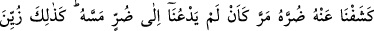
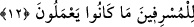

Çünkü onların âcilen öldürülüp helak edilmelerinde hiçbir fayda ve hikmet yoktur.
Belki de bundan sonra îmân edebilirler ya da onların sulblerinden mü’min kimseler
çıkabilir. Bundan dolayı Allah onlara şerri ulaştırmada acele etmez. Bilakis onlara
mühlet tanır ve yavaş yavaş azaba yaklaştırmak için terk eder.
Haddâdî şöyle der: “Bu âyet, işlediği günahlar sebebiyle hak ettiği cezayı acele
isteyen herkes hakkında geçerlidir. Bu acele istemeye; kişinin kendisi, çocukları ve
akrabaları için edip de kabul edilmesini istemediği bedduâlar da dâhildir. Mesela bir
adamın çocuğuna kızdığı zaman: “Allahım onu yükseltme, ondan bereketini kaldır, ona
lânet et!” demesi, kendisi hakkında: “Allah, beni aranızdan alsın.” gibi şeyler söylemesi
bu türdendir. Bir hadiste şöyle buyrulur: “Kişinin sevdiği kişiye bedduası kabul
edilmez.”[26] İbn Ömer (r.anhümâ)’dan Hz. Peygamber’e merfû olarak şöyle rivâyet
edilmiştir. “Ben sevenin sevdiğine yaptığı bedduanın kabul edilmemesini Allah’dan
diledim.”[27] Fakat şu hadis sahihtir: “Babanın çocuğuna bedduası geri çevrilmez.”[28]
el-Mekasidü’l-hasene’de belirtildiği üzere bunların arası cem edilip uzlaştırılır.
Şehr b. Havşeb şöyle demiştir: “Bir kitapta, Allah Teâlâ’nın müvekkel iki meleğine
(kiramen katibin): “Kulumun sıkıntılı halinde aleyhine bir şey yazmayın.” buyurduğunu
okudum.”
Sonra Allah Teâlâ, insanın başına hoş görmediği en küçük bir şey gelse ona
sabredemeyip bilakis onu gidermesi için Allah’a yalvarmasına binâen onların azabı
acele isteme hususunda yalancı olduklarını beyan etmiş ve şöyle buyurmuştur:
12. İnsana bir zarar dokunduğu zaman yatarak, oturarak veya ayakta durarak
bize duâ eder. Ama biz ondan sıkıntısını giderince sanki kendisine dokunan bir
sıkıntıdan dolayı bize duâ etmemiş gibi geçer gider. İşte böylece haddi aşanlara
yaptıkları şeyler güzel gösterildi.
“İnsana bir zarar” hastalık, fakirlik ve diğer sıkıntılardan biri azıcık “dokunduğu
zaman yatarak,” yani yan üstü yatarak yahut da kendilerinde bulunan hastalıktan dolayı
yere yan üstü düşmüş oldukları halde “oturarak veya ayakta durarak bize dua eder.”
Onun izâlesi için ihlas ile bize yalvarır.
İnsanı etkisi altına alan öyle zararlar vardır ki onu yatakta yanı üzeri yatmaya mecbur
eder. Öyleleri de vardır ki daha hafiftir. O zarar da onu ancak oturabilmesine müsaade
eder. Yine öyle zararlar vardır ki insanın başına gelince sadece ayakta durmasına imkan